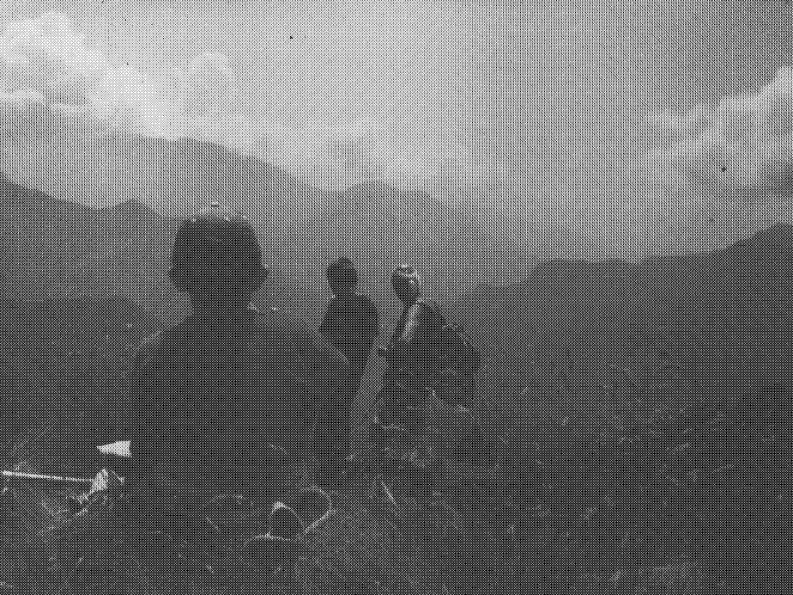
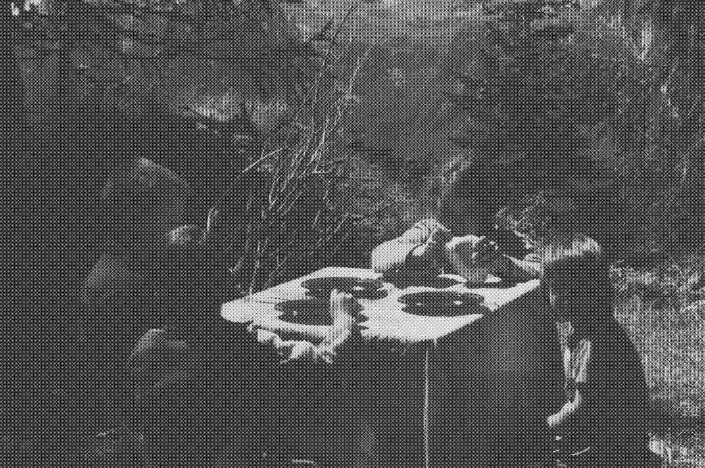
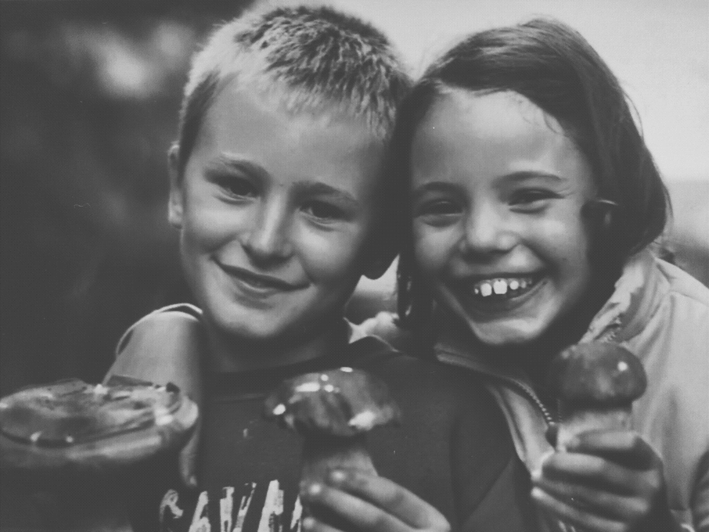
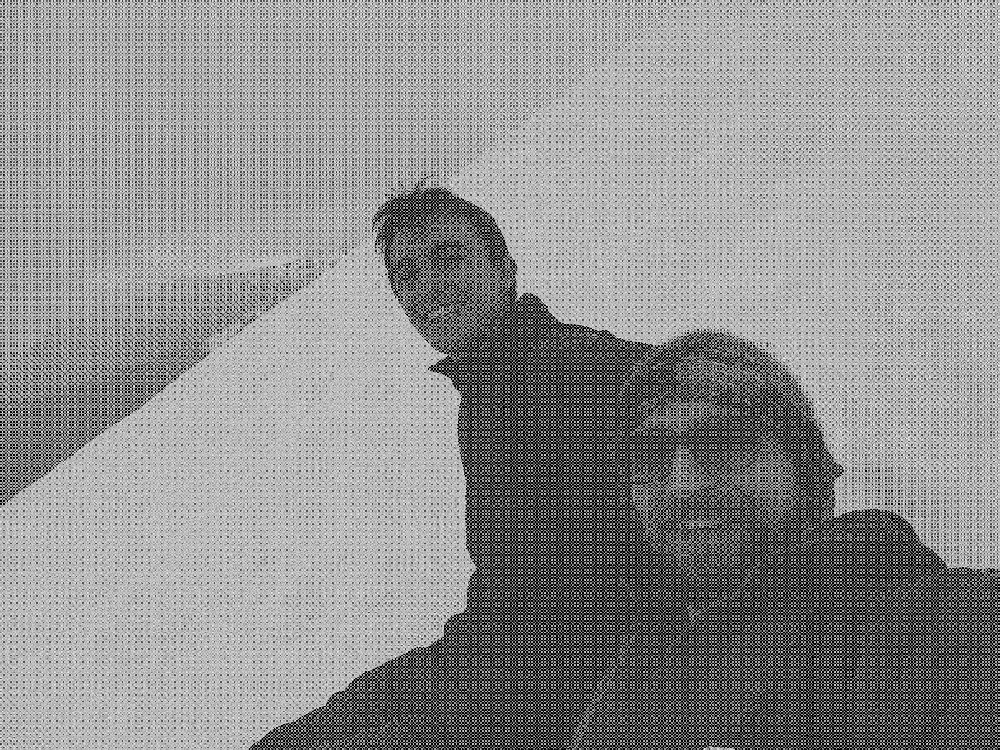
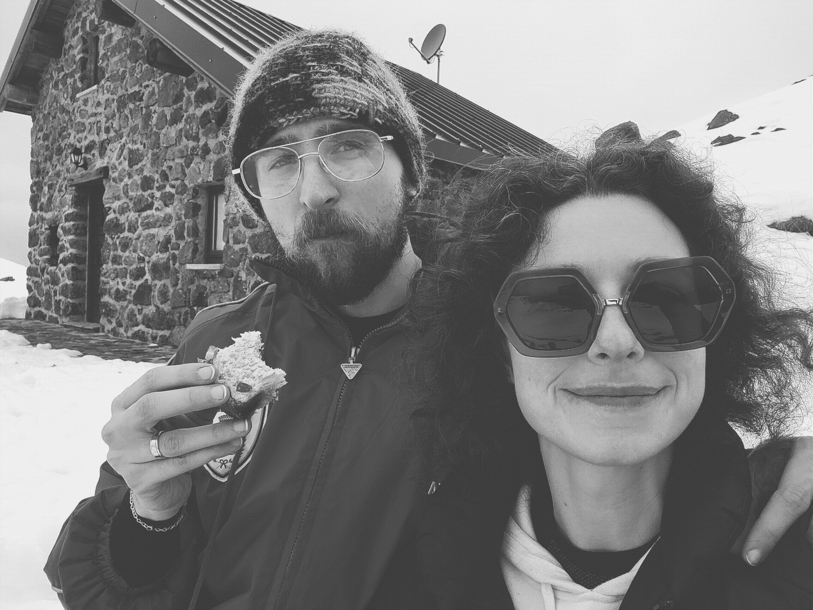
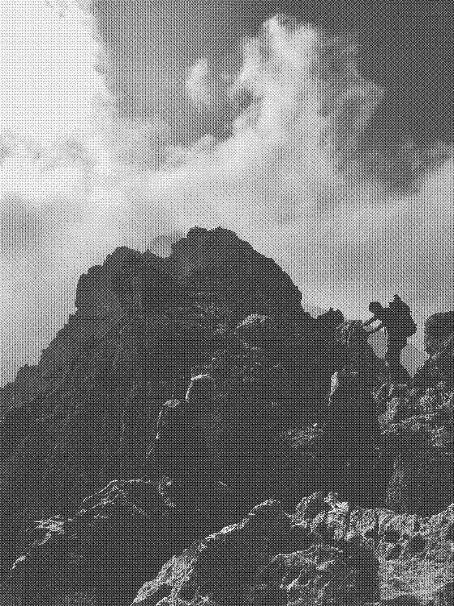
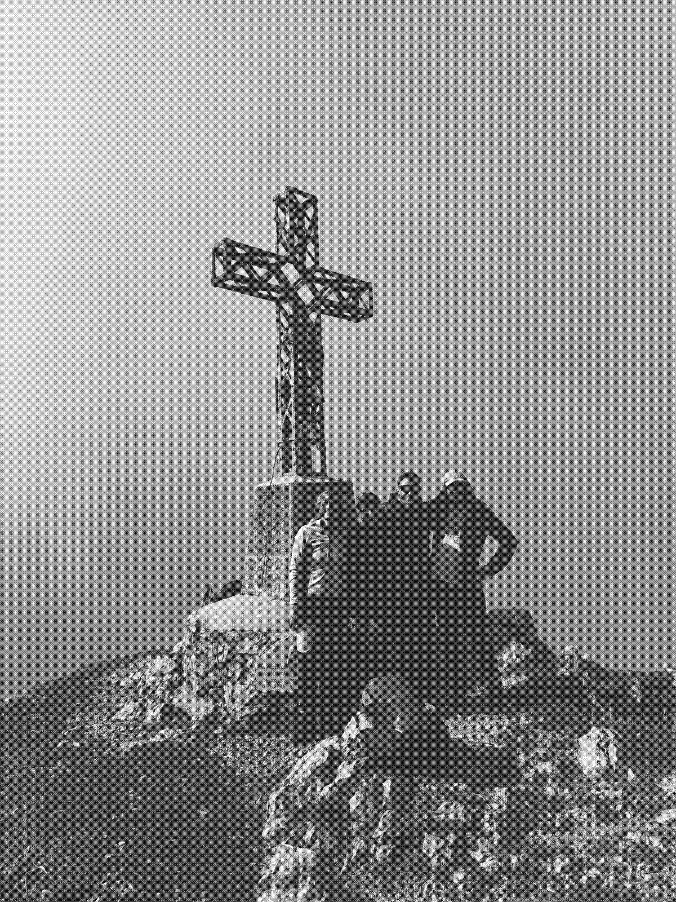

My mountain(s)
This post is dedicated to my grandfather, who, now 89 years old, keeps asking me when we will go to the mountains to forage for mushrooms. He always jokes that he might not be able to hike much anymore... Every time we end up walking 6 hours no stop, and he leads the whole way.

This is me (below, on the left), my sister (eating the bread) and my cousins at Monte Avaro. For most people this name means nothing, but this place is probably one of the most important for me. Still today, some of the most important and memories I have come from there.

My grandparents used to bring us four up to this mountain every summer. However, this was not just a one-day family hike; this was a month-long stay. A month-long stay in a van that my grandfather repurposed as a self-contained unit, lacking running water, a toilet, and other amenities. We slept all together, some years all inside the van, some other years we got a tent on top of it. We collected water from a spring a couple of hundred meters down the road, my grandmother used to cook for us with a small gas stove or on a campfire, where some nights we prepared vin brulé (the Italian version of mulled wine).
This place was amazing. It was not popular, there was hardly anyone around, just us, an alpine cow farmer who became a family friend (you see, my grandparents used to bring our parents up here as well when they were young) and a couple of people owning a hut up there. Electricity was not a thing; I remember drinking hot chocolate in the hut lighted up by oil lamps.
So, how did we spend the majority of our time? Well, hiking for hours with my grandfather looking for mushrooms: boletus pinicola, boletus luridus, Lactarius deliciosus (but only if the sape was orange), mazze di tamburo (lit. drumsticks, or macrolepiota procera), amanita vaginata, russola virescens, russola cyanoxantha and a few more. These excursions were always fun for us and scary for our parents. The reason? My grandfather never used trails; we always explored the woods, away from the areas where other people would go. So imagine I was 6 and I was walking 8 hours next to cliffs or up steep woodland. Surely hard work, but fun and rewarding.

Throughout the years, I acquired some specific knowledge. First of all, how to navigate that terrain safely while keeping up with my grandfather. He's a fast walker, a trait he passed to me. Then, how to recognise edible mushrooms (above), from those that we should avoid (amanita phalloidis, amanita muscaria, russola emetica). How to deal without the comforts of our homes for a long time. But most importantly, the love for the mountain and nature.
Recently, I went back home to Bergamo. It was a fantastic time, and I managed to squeeze in a few days in the mountains. It was winter there, so I found some snow (not as much as I would have imagined, but still fun). My family and I went up to the rifugio Vodala equipped with crampons. After a great lunch, we decided to keep going up, and my sister, my cousin (Luca, the one not looking at the camera in the first picture), my mum and I attempted to reach Cima Timogno. However, fog started to build up, and we needed enough time to go down. So we stopped halfway and turned back. I am not really experienced in winter alpine terrain, so that was a nice challenge. It made me want some training and experience in winter alpine excursions.

I also brought my wife up to Monte Avaro twice. Once to explore around and once to try bobsledding. Not the one on the ice track, but the kid version on a plastic sledge. We climbed up a steep section of Monte Avaro where there were no people around, and we went down a few times. It was fun to try this again after many years.

Update 2025
At the end of this year I went back home and I took the opportunity to go up the mountains again. This time, my aunt, my two cousins and I decided to summit Monte Alben. This is a gorgeous rocky mountain. The track is not hard, although exposed at times. The day was foggy, which I love as it allows you to fully immerse in the walk and climb.
